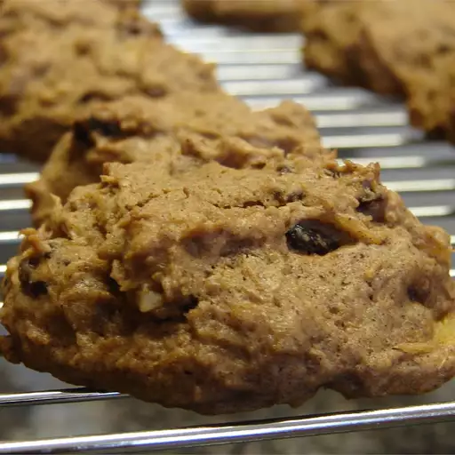

Carrot Cake Cookies

Description
These light and moist carrot cake cookies taste just like carrot cake, but in delicious cookie form. Perfect for potlucks and picnics!
Ingredients:
For the cookies:
- 1/2 cup butter
- 1/2 cup brown sugar
- 1/2 cup white sugars
- 2 large eggs
- 1 (8 ounce) can crushed pineapple, drained
- 1 cup raisins
- 3/4 cup shredded carrots
- 2 cups all-purpose flour
- 2 teaspoons cinnamon
- 1 teaspoon baking powder
- 1/2 teaspoon baking soda
- 1/2 teaspoon salt
- 1 cup chopped walnuts (optional)
For the frosting:
- 4 ounces cream cheese
- 1/4 cup butter
- 2 1/2 cups powdered sugar
- 1 teaspoon vanilla extract
Steps:
- Preheat the oven to 350 degrees F (175 degrees C). Grease cookie sheets or line with parchment paper.
- Beat butter, brown sugar, and white sugar together in a large bowl with an electric mixer until smooth.
- Beat in eggs, one at a time, until combined. Stir in the crushed pineapple, carrots, and raisins.
- Combine flour, baking powder, baking soda, salt and cinnamon; stir into carrot mixture. Fold in 3/4 cup walnuts if using.
- Drop spoonfuls of dough 2 inches apart onto the prepared cookie sheets.
- Bake in the preheated oven until tops are set, about 14 to 16 minutes. Allow cookies to cool for 2 minutes on the cookie sheets before removing to wire racks to cool completely.
- Make the cream cheese frosting: Beat cream cheese, butter, and vanilla with an electric mixer on medium speed in a large bowl until light and fluffy. Beat in powdered sugar gradually to reach spreading consistency.
- Frost cooled cookies with cream cheese frosting; sprinkle with remaining 1/4 cup walnuts, if desired.
Back to home